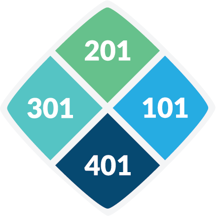
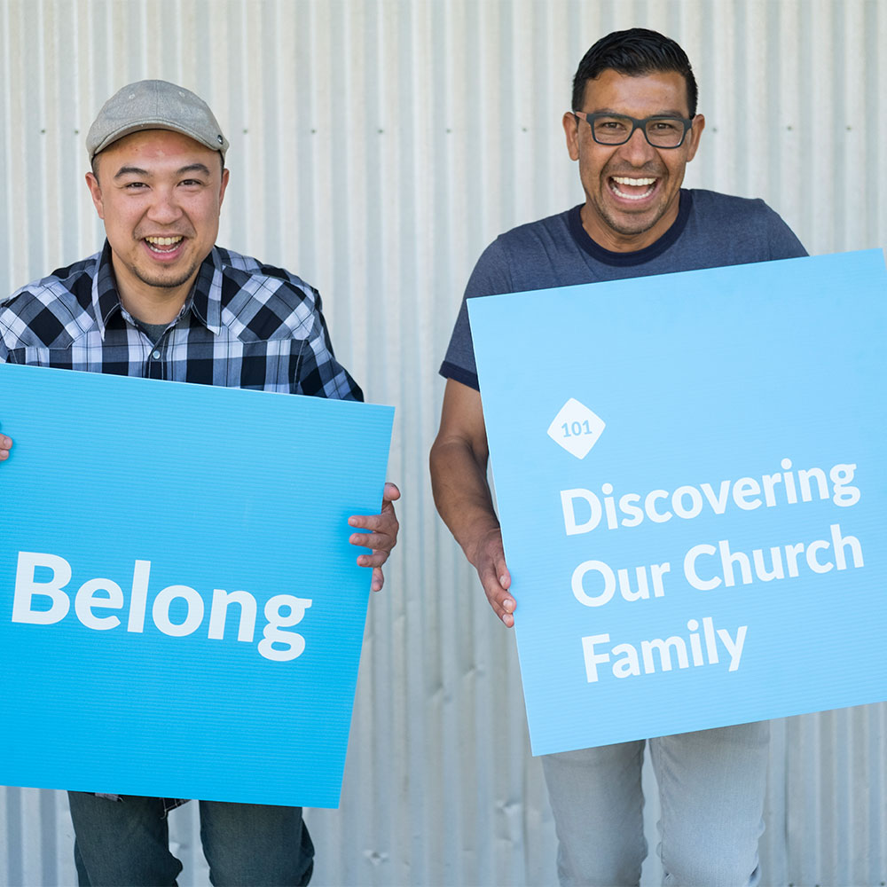
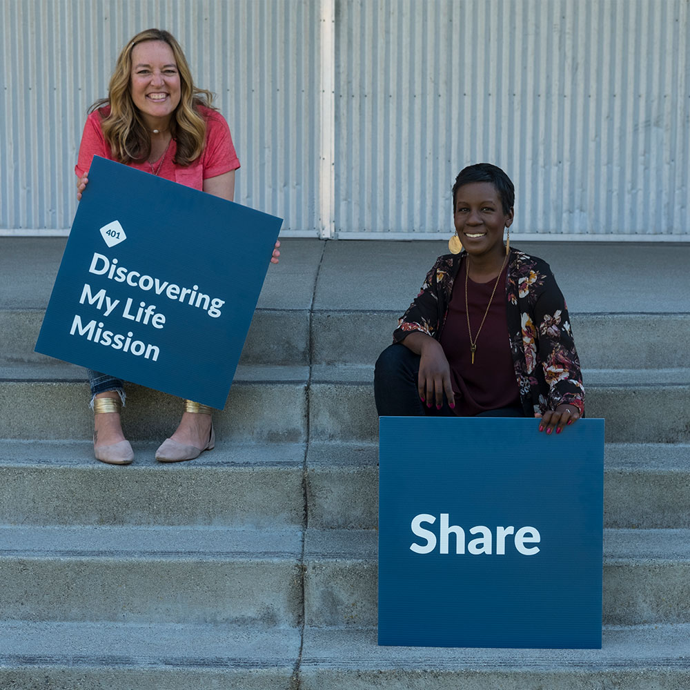

A church should feel like a family — not an event to attend, but a place to belong. CLASS is a deliberate, four-step path to help you find your purpose, use your God-given gifts, and find your people.
A church should feel like a family. It shouldn't feel like an event to attend, but a place to belong. That's why CLASS is important — because we weren't meant to go through life alone. When it comes to finding your purpose, using your God-given gifts to serve, and surrounding yourself with community, we're giving you a deliberate path to follow. It's a path that won't confuse you or leave you in the dark.
So don't think of CLASS as a college course. Think of it as a way to find your purpose and your people, because there's more for you at People's than just attending a weekend service. You have the opportunity to discover your purpose and start living out all that God has for you!
Everyone wants to find a place where they belong. Whether you're new to church, new to People's, or have been attending People's for a while, we want you to find your place — a place where you can feel supported, encouraged, and loved.
Class 101 is designed to help you understand the foundation of People's Church and to help you get connected to our church family. If you decide that this church is the right fit for you, then you can learn about what next steps to take to get more involved in the mission and purpose of People's.
Here's what you can look forward to in 101:

Life wasn't meant to be lived standing still. We should always be moving, learning, and growing as people and as followers of Jesus. But it can be easy to get stuck in a rut. It's not that you're unwilling to grow — maybe you just aren't sure where to start or what to do next. But it could be as simple as establishing a few key habits in your life to get you on the right track.
Class 201 is designed to teach you about these simple habits, and show you the different steps you can take to mature and grow as a Christian.
Here's what you can look forward to in 201:
What you do with your life matters to God. Sometimes it might feel like your actions are inconsequential, but you were created for a purpose! God has shaped you in a unique way — by your spiritual gifts, your heart, your abilities, your personality, and your experiences. This workshop will help you pinpoint each one of these to find your best place to minister at People's Church.
Class 301 is designed to help find the perfect place for you to serve in based on who you are. The best part? You'll learn more about yourself and your spiritual gifts.
Here's what you can look forward to in 301:
It's easy to feel helpless when all you're hearing about is the tragedy happening in our neighborhoods and around the world: racism, natural disasters, corrupt politics, homelessness… the list goes on. But have you ever stopped to realize that you have something to offer a hurting world? Because God has designed you to live on mission, every day could be an opportunity to make the world a better place. You have a role to play!
Class 401 is designed to equip you to start making an impact on a personal, local, and global scale.
Here's what you can look forward to in 401:
